Les huit accords de base
Tu les connais déjà. On va les connaître mieux.
Tu poses déjà ces huit formes. Cette section ne t'apprend donc pas à les poser : elle t'apprend à les connaître — quelle note chacun contient, quel doigt bouge le moins, quelle erreur précise étouffe telle corde, et quelles familles ils forment. C'est cette connaissance-là qui rendra les enchaînements de la section suivante presque faciles.
Lire un diagramme d'accord
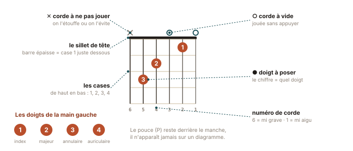
✳ Le mot
Diagramme d'accord (ou
grille, en anglais chord chart) — une grille de six lignes
verticales (les cordes, de la 6e à gauche à la 1re à droite) et
de quatre à cinq lignes horizontales (les frettes). Un point indique où poser, le
chiffre dans le point indique quel doigt. Au-dessus de la grille :
O = corde jouée à vide, X = corde
à ne pas jouer.
Doigté — le choix des doigts utilisés pour une forme
donnée. Un même accord admet souvent plusieurs doigtés ; ceux proposés ici sont
choisis pour ce qui vient après, pas pour ce qui est le plus confortable
isolément. Respecte-les, même si un autre te semble plus simple aujourd'hui : la
section 5 te dira pourquoi.
La numérotation des doigts de la main gauche est universelle : 1 index, 2 majeur, 3 annulaire, 4 auriculaire. Le pouce ne porte pas de numéro : en guitare classique, il reste derrière le manche et ne joue jamais.
Les quatre règles de la main gauche
Elles valent pour les huit accords, et pour tous ceux que tu apprendras ensuite. Si une corde frise ou ne sonne pas, la cause est dans cette liste dans plus de neuf cas sur dix.
- Le doigt se pose juste derrière la frette, pas au milieu de la case. Collé à la barrette, il faut trois fois moins de force. C'est le réglage qui transforme le plus vite le son d'un débutant.
- Le doigt arrive perpendiculaire à la corde, sur la pointe, ongle court. Un doigt couché touche la corde voisine et l'étouffe — c'est la cause n°1 des « trous » dans un accord.
- Le pouce reste au milieu du dos du manche, en face de l'index ou du majeur, jamais par-dessus. Il pousse ; les doigts tirent ; la pince est douce.
- Le poignet est légèrement en avant, jamais cassé vers l'intérieur. Une ligne souple de l'avant-bras aux phalanges. Si ça tire, c'est mal placé, pas mal entraîné.
⚠ Piège classique
Serrer plus fort quand ça ne sonne pas. C'est le réflexe naturel, et c'est presque toujours contre-productif : la corde part en pression excessive (la note monte et devient fausse), la main se fatigue, et le vrai problème — position du doigt — reste entier. Le test : une fois l'accord posé, relâche progressivement la pression jusqu'à ce que ça bourdonne, puis remonte d'un cheveu. Voilà la force nécessaire. Elle est ridiculement faible.
Les huit accords, un par un
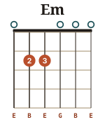
Em — Mi mineur
Deux doigts · six cordes · le plus facile de tous
- Doigté
- 2 sur la 5e corde case 2, 3 sur la 4e corde case 2. Les six cordes sonnent.
- Notes
- Mi · Si · Mi · Sol · Si · Mi (E B E G B E)
- Pourquoi ce doigté
- Avec les doigts 2 et 3 (et non 1 et 2), l'index reste libre : tu passes à Am ou à C en ne déplaçant presque rien. C'est le doigté qui fait gagner des semaines.
- Écoute-le
- Le plus sonore de tous tes accords : trois Mi et deux Si sur six cordes. C'est l'accord « maison » de la guitare.
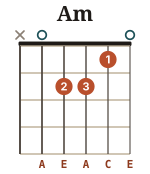
Am — La mineur
Trois doigts · cinq cordes · la forme mère
- Doigté
- 1 sur la 2e corde case 1, 2 sur la 4e case 2, 3 sur la 3e case 2. On ne joue pas la 6e corde.
- Notes
- La · Mi · La · Do · Mi (A E A C E)
- Le lien avec Em
- Regarde bien : c'est exactement Em décalé d'une corde vers l'aigu, plus l'index. Les doigts 2 et 3 gardent la même forme. Ce n'est pas une coïncidence, c'est la structure du manche.
- Piège
- L'annulaire couché étouffe la 2e corde. Teste corde par corde : si le Do (2e corde, case 1) est mat, c'est lui.
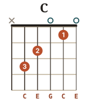
C — Do majeur
Trois doigts · cinq cordes · la grande diagonale
- Doigté
- 1 sur la 2e corde case 1, 2 sur la 4e case 2, 3 sur la 5e case 3. La 6e corde ne se joue pas.
- Notes
- Do · Mi · Sol · Do · Mi (C E G C E)
- Le lien avec Am
- Les doigts 1 et 2 ne bougent pas du tout entre Am et C. Seul l'annulaire voyage de la 3e corde case 2 à la 5e case 3. Tu tiens là ton premier enchaînement quasi gratuit.
- Piège
- La 1re corde à vide, étouffée par l'index couché. Redresse l'index et cambre-le : la corde aiguë doit chanter.
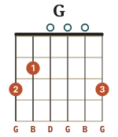
G — Sol majeur
Trois doigts · six cordes · le grand écart
- Doigté
- 2 sur la 6e corde case 3, 1 sur la 5e case 2, 3 sur la 1re case 3. Six cordes.
- Notes
- Sol · Si · Ré · Sol · Si · Sol (G B D G B G)
- Pourquoi 2-1-3
- Beaucoup de débutants jouent G en 3-2-4. Ce doigté est plus stable isolément, mais il bloque le passage vers C et vers D. Avec 2-1-3, tu libères l'auriculaire et tu prépares l'accord suivant. Si tu as déjà l'habitude de l'autre, consacre-lui une semaine de rééducation : ça vaut largement l'inconfort.
- Variante utile
- En ajoutant le 4 sur la 2e corde case 3, on obtient un G plus plein, très employé en folk. À garder pour plus tard.
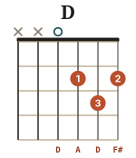
D — Ré majeur
Trois doigts · quatre cordes · le petit triangle
- Doigté
- 1 sur la 3e corde case 2, 2 sur la 1re case 2, 3 sur la 2e case 3. On ne joue que les quatre cordes aiguës.
- Notes
- Ré · La · Ré · Fa♯ (D A D F♯)
- Piège
- Gratter les six cordes. La 6e (Mi) sonne franchement faux sous un accord de Ré. Prends l'habitude d'attaquer la 4e corde : c'est la corde de départ de D, exactement comme la 5e est celle de Am et C.
- Le triangle
- Mémorise D comme une forme triangulaire, pointe en bas, et non comme trois positions séparées. Les accords s'apprennent en formes, pas en coordonnées.
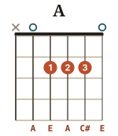
A — La majeur
Trois doigts alignés · cinq cordes
- Doigté
- 1, 2 et 3 alignés sur la case 2, cordes 4, 3 et 2. La 6e corde ne se joue pas.
- Notes
- La · Mi · La · Do♯ · Mi (A E A C♯ E)
- Le lien avec Am
- Un seul doigt sépare A de Am : la tierce Do♯ redescend en Do. Joue A puis Am en boucle lente : c'est la plus belle démonstration de ce qu'est un mode majeur ou mineur.
- Piège
- Trois doigts dans une seule case, c'est étroit. Sur guitare classique, dont le manche est large, c'est en fait plus confortable que sur une folk. Aligne-les en escalier léger plutôt qu'en rang parfait, et fais sonner la 1re corde à vide.
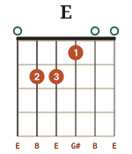
E — Mi majeur
Trois doigts · six cordes · l'accord du flamenco
- Doigté
- 1 sur la 3e corde case 1, 2 sur la 5e case 2, 3 sur la 4e case 2. Six cordes.
- Notes
- Mi · Si · Mi · Sol♯ · Si · Mi (E B E G♯ B E)
- Le lien avec Em
- C'est Em plus l'index. Le passage Em ↔ E est le plus économique de toute la guitare : un doigt se pose, un doigt se lève.
- Sa couleur
- E est l'accord de résolution du flamenco et d'une immense partie de la musique hispanique — c'est l'accord vers lequel tombe la cadence andalouse Am – G – F – E. Tu l'entendras constamment dans la section 8.
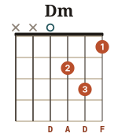
Dm — Ré mineur
Trois doigts · quatre cordes · le plus cubain
- Doigté
- 1 sur la 1re corde case 1, 2 sur la 3e case 2, 3 sur la 2e case 3. Quatre cordes seulement.
- Notes
- Ré · La · Ré · Fa (D A D F)
- Piège
- Le majeur et l'annulaire se gênent. Dm demande une main bien cambrée, doigts très verticaux : c'est le meilleur test de la qualité de ta position. Si Dm sonne propre, tous les autres sonneront.
- Sa couleur
- C'est l'accord du boléro. Dos gardenias, Lágrimas negras, Veinte años : la moitié du répertoire cubain que tu vas aimer commence par Dm ou par Am.
★ Petite victoire · le test corde par corde
Pose un accord, puis fais sonner les cordes une par une avec le pouce, lentement, et écoute chacune. Une corde mate ? Ne bouge rien d'autre : cherche quel doigt la touche, et cambre-le. Quand les huit accords passent ce test, tu as déjà une main gauche de niveau intermédiaire — et la plupart des gens qui « savent faire les accords » échouent à ce test.
Les familles : quatre manières de ranger huit accords
Mémoriser huit formes isolées est difficile. Mémoriser quatre paires qui se ressemblent est facile. Voici la carte :
◆ La famille du Mi
Em · E — même forme, l'index en plus ou en moins. Six cordes, basse sur la 6e. Ce sont les accords les plus graves et les plus pleins.
◆ La famille du La
Am · A · C — cinq cordes, basse sur la 5e. Am et C partagent deux doigts ; Am et A ne diffèrent que d'une tierce.
◆ La famille du Ré
D · Dm — quatre cordes, basse sur la 4e. Petites formes compactes, main très cambrée. Le majeur et le mineur échangent deux doigts.
◆ Le solitaire
G — six cordes, mais des doigts très écartés. C'est l'accord qui demande le plus grand déplacement, et donc celui qu'il faut anticiper le plus tôt.
✦ Le sais-tu ?
Ces huit formes portent un nom : on les appelle les accords ouverts, parce qu'ils mêlent des cordes pressées et des cordes à vide. Elles ne sont pas « les plus faciles » par hasard : elles existent parce que l'accordage E-A-D-G-B-E les rend possibles. Changez l'accordage et elles disparaissent — d'où les open tunings du blues du Delta, où la guitare accordée en sol ou en ré majeur sonne un accord complet à vide, et où le bottleneck remplace les doigts. Les huit formes que tu connais ne sont donc pas « la guitare » : elles sont un dialecte, extraordinairement répandu, d'un instrument qui en compte des dizaines.
Bonus : les accords de septième, pour plus tard
Tu n'en as pas besoin avant la semaine 5, mais les voici pour que tu saches où les retrouver. Un accord de septième ajoute une quatrième note à l'accord ; il crée une tension qui appelle la résolution. C'est le sel de la musique cubaine et du blues — et, techniquement, la plupart ne demandent qu'un doigt en moins.
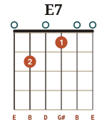
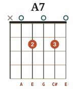
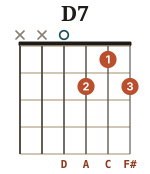
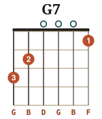
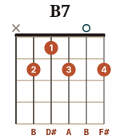
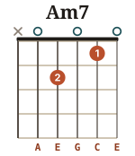
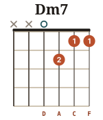
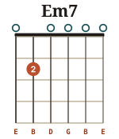
Figure 4.2 — Les huit septièmes du guide. Em7 et Am7 s'obtiennent en enlevant un doigt : essaie-les tout de suite, c'est gratuit.
⚑ Défi · l'accord à l'aveugle
Ferme les yeux. Pose Am. Rouvre. Est-ce juste ? Recommence avec les huit accords, dans un ordre tiré au hasard. Objectif de la semaine 2 : six sur huit posés correctement sans regarder. Objectif de la semaine 6 : huit sur huit. C'est le moment où la guitare cesse d'être un problème de géométrie pour devenir de la musique.